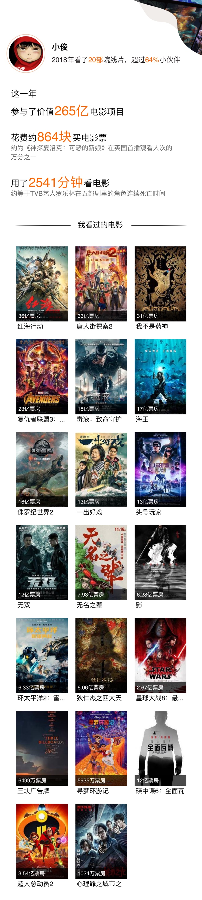

跨过这座山，他们就会听到你的故事。
2018年的最后两天在一场大雪中匆匆飘过，转眼就2019年。距离2009年已经过去了十年，那时候的我才刚上初中，在回龙中学，现在的我每次回家还是会和那时的同学去学校打球，那里和十年前也没有多大的区别。上一次写博客还是在几个月前，这几个月也让我产生了惰性，总是提不起劲来继续写，但是2018年也已经过去了，我想还是有必要记录一下这一年生活中发生的事。
北京游
2018年初快放寒假的时候，因为在北京有几个高中同学，于是大家就在高中群里讨论去北京玩的事情了。1月20号，我从南京到达北京。
对于之前没去过北方的南方人，北方的风着实刺骨，看到结冰的河就像上去踩一踩，这在南方可是看不到的。第二天去了故宫。
逛了很久的故宫，然后去爬了故宫后面的景山，路过崇祯自缢的亭子，从山上能够看到故宫的全景，红墙黛瓦。在山上遇到一个穿短袖跑步的老爷爷，真是有点佩服。前几天还在鼓楼校区篮球场上看到一个头发花白的打篮球的老爷爷，跑得并不比年轻人慢。
第三天去了长城，也许是知道我们要来，在前一天晚上，长城下了点小雪。
第四天去滑雪，也是我第一次滑雪，摔得有点多，滑得很欢快。后面去了颐和园以及北京大学未名湖，回去的那一天早上去了天安门广场。在北京的那几天晚上基本上都是在宾馆，因为外面实在是太冷了，每次都一起打牌打到很晚。之后便坐上了回去的火车，到达长沙后偶遇大雪，回家的高速公路都封了，迫不得已又在长沙待了一天。
春招
在家里过完了春节，正月十五号左右回学校，那时候已经是大三下学期了。各大互联网公司开始春招，我之前没有过找实习的经历，自己在慢慢摸索中投出了简历。其实我第一次面试早在寒假就开始了，当时我投的是淘宝，正月十号左右就打电话给我要求电话面试，我当时没什么准备，面试的过程中很多问题我都没有答上来，结果当然是挂了。
回到学校后，和周围的同学讨论，修改了一下简历，大概参考了一下网上的模板。简历的大概内容就是姓名、联系方式、心仪职位、获奖经历、项目经历和在项目中担任的角色、掌握的能力等，项目经历尽量不要写课程项目，这样没有吸引力，最好写一些参加比赛的项目，或者自己造轮子的项目，能够让人耳目一新。有一些公司的春招分提前批和正式批，提前批开始投简历的时间会早一点，而且有内推的名额，当时找了一些在那些公司工作或者实习的学长，找他们要内推码，就能参加提前批。有些公司的提前批可以免笔试，比如美团、腾讯等，有的公司提前批也还要笔试，比如头条、网易等。除了笔试之外，大概还有两三轮面试，面试的方式分电话面、视频面、现场面。电话面就大概会在电话里问一些问题，他问你答就行了，如果遇到自己不会的问题，直接说不会，千万不要模模糊糊地答，因为面试官很有可能抓住你这一点，往更深层次问，越问你越不懂，这样就会浪费大量面试的时间，让面试官觉得你啥都不知道，还不如直接说不会，跳过这个知识点，后面的问题很有可能答得上来。视频面就有点麻烦了，他一般会让你敲代码，然后你一边写，他一边看，这个过程是有点紧张的，要是万一写不出来就会很尴尬。现场面就是去公司现场面试，公司会找个时间开个面试会，大家轮流进去面试，现场面试更加接近面对面地交流，这种情况面试官很有可能让你手写代码，就是那种不用编辑器，直接用笔在纸上写，这就要求能记住一些库函数或者常用方法的名称，这种难度无疑是最大的。最后一面是hr面，一般能到这一面，基本上就稳了。hr面的内容主要是部门的hr来问你一些问题，比如为什么要选择这个公司、对工作的打算、未来的期许是什么等等。
投完简历后就是等待面试，一般都会邮件或者短信通知面试时间和方式，让你有个准备。我那段时间看了很多网上的面试技巧和专业的知识点，即使你是面试前端的，面试的时候还是会问一些操作系统、网络、软件工程、数据库、数据结构这些计算机基础科目的问题，在准备的时候也学会了很多之前不知道的知识点，比如HTTP协议的状态码、缓存机制，JS的闭包等。这个时候也会有很多公司来学校进行宣讲会，我参加了今日头条和腾讯的宣讲会，宣讲会会请一些学长学姐介绍他们在该公司的工作和生活，然后就是宣传公司概况、理念和福利，然后Q&A，如果有的话，最后会进行一波抽奖，腾讯的会送一些企鹅公仔。
那段时间正值大三第二学期的期末考试（大三分三个学期），还有J2EE的大作业。投了很多家公司的简历，包括阿里、美团、今日头条、京东、网易、华为、携程、腾讯、拼多多等，有些笔试或者面试与考试时间冲突的就取消了。一边看面试的资料，一边还要复习考试的知识，面试关乎到暑假的实习，考试成绩又关乎到保研，哪一边都不好松懈，那段时间很紧，也感觉到很充实。每次电话面试都感觉是对自己的锻炼，虽然等待面试的过程有点痛苦。期间遇到的面试官大多很和蔼，有不会的地方他会耐心引导你，然后让你面试完去了解一下。每次面试完都会和室友或者周围的同学交流面试的内容和经验，然后再说说自己感觉怎么样。从2月11号开始第一次电话面试，到4月24号最后一次面试，我的春招就差不多结束了，最后收到了美团的实习offer。
收到录用通知的时候很开心，感觉这段时间的努力并没有白费。这是我第一次找工作的经历，虽然只是实习，也学会很多，需要提高的空间还有很大。
就业、考研与保研
这应该是很多即将毕业的大学本科学生面临的一个大问题，就好比曾经的高考，但是高考没有选择的余地，而这次还可以做出选择。当时萌生出毕业后去就业的想法，一是因为当时是否能保上研还不确定，二是软件这个专业就目前的火热形势来说，找个好一点的工作并不难。所以当时不管怎么样，先找到实习再说，要就业的话可以通过实习转正，要考研的可以实习完再回来准备，三个多月应该来得及。
在当时辅导员安排了几次学长学姐分享会，分别邀请选择就业、考研和保研的学长来分享他们的经验。就业分享会邀请的是一个在腾讯微信部门实习的学长，他分享了一下自己选择就业以及进入腾讯的心路历程，他说到当时有个学长已经拿到了阿里蚂蚁金服的offer，但在实习了几个月后，又选择辞职回学校考研，当时距离考研只剩下一月多月的时间，但他还是考上了。然后再讲大公司的工作经历，提交代码要经过很多道程序，不像自己做项目时那么随意，再接着分享自己面试时的一些心得。考研分享会分别邀请考本校、上交和清华的学长来做分享，大概就是说考研的时候作息要规律，然后还分享了考研应该选择哪些复习的书目，他们无一例外的说考本校是很容易的，是个人都能考上，听着他们考研的故事，听得似乎我也有点热血沸腾，但是又很难打起劲去复习那些大一大二学过的专业课。保研分享会的话就是邀请保本校、上交、清华的学长来分享他们保研的经验，然后还提醒我们注意一些暑期夏令营的时间和需要准备的东西。听完这三场分享会后，我就想凡事都要有个二手准备，当时我处于保研的边缘，保研的名额要到九月份才能出来，不知道能不能保上，如果能保上则更好，如果不能那么就只能选择考研，当时我已经开始看微积分一，想提前准备一下。
六月份中旬报名参加本院系的暑期夏令营，请老师写推荐信，提交申请材料，夏令营是想保研必须参加的。7月12号考完期末考试，还有两三时间准备夏令营的笔试和面试，时间比较紧。7月14号夏令营开始， 下午是学院和专业导师的介绍会，也有很多其他学校来参加夏令营，想保研南大的学生，可能这里面有一些会是研究生的同学了。7月15号下午是面试，流程就是先用英文的自我介绍，然后台下的几个老师问你一些项目经历和专业课程的问题，晚上是在机房机考，题目大概就是几个用java面向对象的程序设计题和算法题，并不难，为期两天的夏令营就这样结束了，但是还不轻松下来，因为美团的实习是18号早上去报道，我17号坐高铁到达上海，开始实习的生活。那段时间又是期末考试，又是夏令营的，也算是很忙了。8月18号学院内推免生学分绩公式，从往年的保研排名来看，大概能保到九十多名，我当时处于八十几名，在保研的边缘，保不保得上还是个未知数。
9月1号从实习请假回学校提交保研的材料和开学注册，大学本科的最后一年也在忙碌中开始了。9月5号院系内的推免名单公示，看到名单里有我，也总算松了一口气，能保研可比考研轻松多了。然后就是推免生在学校研究生系统上的预报名，9月27号在教育部研究生系统上填推免生志愿，28号收到录取通知，也总算研究生有学上了，心里的一块石头也落了下来。
无论是就业还是读研，都是自己选择的一条路，就业可以认识更多的人，读研可以沉淀。最早打消就业这个念头是在实习的时候，感觉那种朝九晚五的生活对我来说还是太早了一点，现在还是好好珍惜已经为数不多的校园生活。
实习
7月17号到达上海，之前通过邮件通知填写了一些员工的基本信息和签署实习协议。18号早上去长宁区安化路易园报道，在路上遇到一个女生，交谈后才发现她也是今天去易园美团报道的，她是学设计的，对于我这种程序员说的东西一窍不懂。领电脑的地方有点偏，找了好一阵功夫才找到。在易园领了工牌和电脑之后，就坐地铁前往漕河泾，在地铁上对实习的地方充满了期待。到达后带电话给部门的负责人，负责人叫组员来接我，给我安排工位，然后给我发了份手册，让我先好好了解一下美团的开发环境。我对着手册上，把刚领的电脑上的开发环境安装了一遍，然后再看美团的员工制度，大公司就是不一样呀，管理的制度很多也很细。周围全是埋头的写代码的程序员，面对大大的显示屏，桌上挂着些粉色的气球，原来是美团部门的近期的活动，还有在研讨间讨论项目的小组，这就是互联网公司的氛围。

实习有一个的问题就是租房，18号的时候还没有找到房子，之前也在58同城、贝壳上看了很多，但还是现场去看看才行，于是住了两三天酒店之后，在周末决定去看看要租的房子。与我同时在美团实习的还有一个大学室友，我俩刚好可以一起租房。看完后就决定租下来了，房子分上下层，下层是厕所、厨房，上层是床，设施也比较完整，可能唯一的缺点就是隔音效果，这对于打游戏喜欢大声说话的我俩来有点尴尬，可能会影响到住在周围的人。
对于上海这座城市，我的印象大概是繁华。之前老是听周杰伦的《上海一九四三》，方文山的歌词将上海写得很美，“黄金葛爬满了雕花的门窗 夕阳斜斜映在斑驳的砖墙 铺着榉木板的屋内还弥漫 姥姥当年酿的豆瓣酱”，“说着一口吴侬软语的姑娘 缓缓走过外滩”，“老唱盘 旧皮箱 装满了明信片的铁盒里 藏着一片玫瑰花瓣”。榉木板、豆瓣酱，每到一个城市都可以感受一下它的历史和人文。之前来过上海两次，一次和同学来上海这边玩，当时正值十一黄金周，到处都是人山人海，去过外滩、上交复旦、豫园。第二次是为了参加面试，来上海这边现场面试。
实习了几天后，组长说这几天来了两个新同学，我们中午一起吃饭吧。吃饭的地方在一家湘菜馆，难道全国各地都喜欢吃湘菜？饭桌上大家有说有笑，平时看似文静的大家，讲起段子来一个比一个厉害，我也大概对组内的成员有个了解，东哥、马老师、丹丹姐、韵姐…平时实习时间大概早上十点上班，下午六点结束，中午吃饭基本就是点外卖，因为实习的地方在十楼，中午等电梯的太多了，只能爬楼梯下去，晚上就下楼去吃饭，每次吃完饭，总喜欢去旁边的一点点买一杯奶茶，晚上回去的时候，总喜欢在地铁上戴耳机听歌，地铁上嘈杂的声音和耳机里的歌声混合，精神振奋，感受不到实习一天的劳累。每个实习生都有一个导师帮忙带，就是负责指导刚来的实习生，东哥就成了我的导师。东哥带我熟悉组内的工作和开发所需要注意的东西，然后再带我慢慢了解项目，最后就可以分配给我任务了。组内每周都会有分享会，安排组内的两个人来分享给大家自己踩坑的地方或者觉得非常实用的知识给大家。组内每个月有一次团建，就是大家一起去轰趴，有乒乓球、桌游、ktv、电影院等等，吃完饭后就各玩各的。马老师貌不惊人，唱歌确实唱得好，一首首周杰伦的歌真是信手捏来，阳光宅男、你听得到、说好的幸福呢等等，果然周杰伦的歌迷在哪里都能找到同伴，最后一首《雨下一整晚》更是令我折服，这首歌唱起来本来难度就极高，马老师做到很高程度的还原，着实令我惊讶，以至于我之后在很长了一段时间内疯狂单曲循环这首歌，白杨木影子被拉长，像我对你的思念走不完~~~
当时恰逢china joy在上海举办，这是一个比较大型的动漫和游戏展览，开幕时间恰好在周六，于是我便叫上几个也在上海实习的大学同学一起去。8月4号早上我们来到上海新国际博览中心，人山人海，在门口排队都排了一个多小时才进去。里面各种cosplay和游戏外设，总共有十几个展馆，每个展馆的主题都不一样，看到平时在直播上的游戏主播，还感受了一波VR，在里面逛了下午才出来。第二天去东华大学，和一个高中同学叙叙旧，一起聊聊，看看电影。
在实习的时候时间总是过得很快，暑假就悄然过去了，转眼就到了九月份。那时候美团部门之间正在举办篮球赛，我也报名了，当时还以为能打一场实实在在的篮球赛呢。九月份的时候，保研的结果已经出来了，当时学校开学加上保研要准备一些资料，我知道，自己对实习生活说告别的时间已经到了。7月18日到9月20日，两个月的时间，那场没有打成的篮球赛，就让它留到以后吧，如果未来的实习或工作中有篮球赛，我一定会去参加。9月20号下午去易园交完电脑，临走的时候，收到了美团中秋员工关怀的月饼，也收到了组内很多小伙伴的祝福，心里也很温暖，各位，来日方长。回到出租屋里的时候，退出了大象账号，收到了美团对离职员工发的短信，既往不恋，纵情向前！


海贼王
保研的志愿和体检事情弄完，已经到九月底了，之后除了一门软件管理的课程之外，便没有其他的事情。十一放假的时候，闲得无聊，想找一部剧来看看，经过室友的推荐以及早已久仰大名，便开始从头看这部已经连载了二十年的长篇动漫巨作《海贼王》。
海贼王连载至今，动画已经八百多集，漫画也已经九百多话，每集大概二十分钟左右，要想从头到尾全部看完，得花很长一阵子功夫。前一百集左右大概就是讲海贼王哥尔·D·罗杰自首，用自己的死开启大海贼时代，吸引了无数有志青年涌向大海，寻找ONE PIECE。二十年后路飞受红发香克斯影响，怀揣成为海贼王的梦想出海，在东海寻找伙伴，索隆、乌索普、山治、娜美纷纷加入草帽海贼团，与路飞一起为了各自的梦想航向大海。待到进入伟大航路，剧情渐入佳境，乔巴篇着实令我感动到了，庸医希鲁鲁克济世度人，想用自己的死来敲醒昏庸的磁鼓国国王，临死前说了一段话：“我问你，人究竟什么时候会死，是心脏被枪打中的时候？不对。得到不治之症吗？也不对。喝了剧毒蘑菇汤之后吗？当然不是。而是被世人遗忘的时候”，最后乔巴秉承希鲁鲁克海贼旗帜的精神，搭上路飞的船，樱花在冰雪之国绽放，是前期较为感人的篇章之一。
后面的剧情逐渐发展，阿拉巴斯坦篇剧情繁杂，线索极多但不乱，草帽一伙帮助微微公主平定沙漠之国叛乱，击碎克洛克达尔的阴谋，剧情紧张有趣。空岛篇充满浪漫主义色彩，罗兰度冒险找到黄金乡，却被世人误解，被称为大骗子几百年，草帽一伙寻找空岛，击败艾尼路，敲响黄金钟，为罗兰度平反。剧情在七水之都和司法岛篇中进入高潮，并在顶上大战中达到顶峰。草帽一伙分散各地，两年后香波地重聚。鱼人岛涉及鱼人与天龙人的种族问题，古代兵器海王波塞冬出现。庞克哈萨德偶遇特拉法尔加·罗，牵涉出新世界的地下黑市，破坏凯撒的科学阴谋。德雷斯罗萨篇乌索普力挽狂澜，拯救变成玩偶的众人，路飞四挡爆发击败多弗朗明哥。佐乌篇牵涉出和之国光月家族和历史正文的秘密。万国篇路飞破坏BIG MOM的茶会，救出山治。
海贼王最经典、最热血的场景，毫无疑问就是草帽一伙与CP9在司法塔前对峙，罗宾回忆起灭族之痛，回忆起这二十年被世界政府通缉的昏暗日子，“没有人是孤独的，总有一天你会在这片大海之上找到对你温柔的伙伴们”，泪水喷薄而出，对着草帽一伙大喊：“我想活下去，把我一起带向大海吧！”。胆小懦弱的乌索普化身狙击王，平时大大咧咧的路飞决心与世界政府为敌，救出罗宾：
“狙击王，把那面旗帜射穿”
“了解！”
这句话可以燃烧一辈子。
海贼王的主题是梦想与自由，各种种族和思想在海贼世界掺杂，那片广阔的大海就是藏着梦想与自由的地方，“大海之上最自由的人就是海贼王” 。海贼王的格局在司法岛篇之后逐渐扩大，四皇、七武海、世界政府、天龙人，剧情也牵涉到战争与种族。海贼王是关于自由和梦想豪气干云的冒险史诗，充满世故人情耐人寻味的童话，宏大的世界观和精彩的伏笔，海贼王中有很多埋了几百集的伏笔，比如艾斯的生命纸、山治的身世、鱼人岛的炸弹等等。万里阳光号上的每一位少年都有着为自己梦想而出海奋斗的理由，他们的梦想都有着寄托，而不是孤独的。虽然海贼王目前的剧情还远远望不到结局，但我相信，在结局的时候，草帽团上的每一个人都能实现他们的梦想：
- 路飞找到ONE PIECE，成为海贼王，带着那顶象征着意志传承的草帽，回到风车村，在马琪诺的酒馆里，与红发香克斯畅谈往事
- 索隆成为世界第一剑豪，连着死去的师姐古伊娜的那份一起努力，让自己的名号，响彻天堂
- 娜美画完世界航海地图，回到可可亚西村，种上一片养母贝鲁梅尔最喜欢的橘子树，在头上戴一顶风车
- 山治找到ALL BLUE，回到海上餐厅，与红脚哲普一起给那些大海上挨饿的人送去美味的食物
- 乌索普成为勇敢的海上战士，坐在窗前的树上，向可雅吹牛说自己在七水之都与海贼王决战，以及带着七千小弟拯救德雷斯罗萨
- 乔巴研究出了万能药，完成庸医希鲁鲁克济世度人的愿望
- 罗宾找齐了历史正文，将世界政府的秘密公之于众，告慰奥哈拉全体学者的在天之灵
- 弗兰奇完成了梦想之船，回到七水之都，和师兄冰山一起完成师傅汤姆先生未完成的造船事业
- 布鲁克与拉布重逢，遵守半个世纪的约定，同唱一曲宾克斯的美酒
- 甚平和解鱼人和人类的矛盾，让鱼人岛重回地面，带着白星公主在乙姬王妃的墓前告诉她这一切
看了接近两个月才看完，在海贼王里面，最让我印象深刻的，不是热血漫天的战斗，不是林林总总的恶魔果实，而是触及心底的感动。在海贼王里，无论是亲情、友情，抑或是同伴之情，都表达得淋漓尽致，而且从不遮掩。那片广阔的大海就是代表梦想的地方，那群光彩夺目的少年，乘风破浪，阳光万里。在多年以后，我还会记得，那个手里拿着肉，头上戴着一顶草帽的少年，咧嘴大笑，高喊：“海贼王，我当定了！”

听歌与电影
平时写代码或者坐车的时候喜欢听歌，坐车的时候总是喜欢听一首《一路向北》。在上海实习的时候，每天晚上回去坐地铁，都带着耳机听歌，然后看着地铁外面飞驰而过的广告牌，总有一种很安静的感觉。听歌爱好的话比较喜欢流行和古风，古风歌听起来有一种美，歌词的对仗工整也是吸引我的地方。对于周杰伦的歌总是有一种执念，百听不厌，基本他所有的歌我都能哼几句。但自从4月1号网易云音乐失去的周杰伦的版权之后，我就只能在QQ音乐上听他的歌了，从最初的酷狗音乐，听歌软件换了很多个，但是喜欢的歌却没有变，歌单里总是有那么几首老歌，比起抖音上那些烂大街的，这些老歌听起来更有韵味，而且完全没有过时。
去年网易云的年终总结惊艳了我，但今年的总结基本模仿去年的模板，新意不多。听歌的时候总喜欢翻开评论，看看这首歌的来历和背后的故事。网易云音乐的用户喜好和数据统计还是很厉害的，写代码的时候就打开私人FM一直听下去
在周末如果有好看的电影，会和室友一起约去看电影，然后再吃顿饭，也是一种休闲放松的方式。今年总共看了差不多看了二十部电影，我觉得最好的两部应该是《寻梦环游记》、《头号玩家》，《寻梦环游记》讲述亲情，《头号玩家》讲述对游戏的热爱，在电影院看真的效果很好，画面也很漂亮。很多人热爱游戏，也更怀念那些曾经陪你一起玩游戏的朋友，这大概就是这部电影想表达的东西。《寻梦环游记》中的一句话让我感触颇深，“死亡并不是一个人生命的终点，遗忘才是”

憧憬
2018已经成为过往，2019才刚刚开始。今年将面临本科毕业，下半年就要成为一名研究生了，也算是人生又一个路口，读书的时间也差不多仅剩两年，那些在本科没有完成的事情，为了不让自己留下遗憾，我希望能在研究生阶段加油努力。大四的下半学期还有毕业设计和学车两件事情，学车也已经拖了很久，这次一定要学完拿到驾驶证。晚睡这个习惯很难改，但我应该尽量早睡一点，平时多去打打球。其实我一直有一个愿望，就是能够带上我喜欢的女孩，去看一场周杰伦的演唱会。
我们无法回到过去，只能憧憬未来。过去没完成的事情只能留给将来，但过去的遗憾不能留给将来，如果现在没有努力去抓住机会，多年以后只会追悔莫及。
不知不觉就写了这么长，总结了自己的这一年，没想到竟然经历了这么多事，希望明年写总结的时候，看到这一篇，嘴角能够微微一笑。